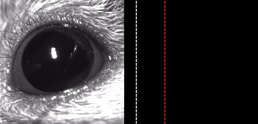
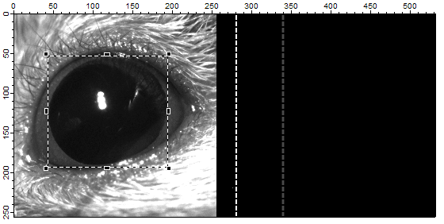
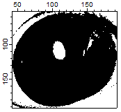
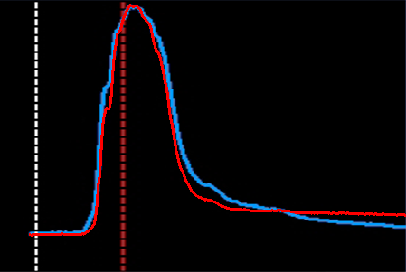
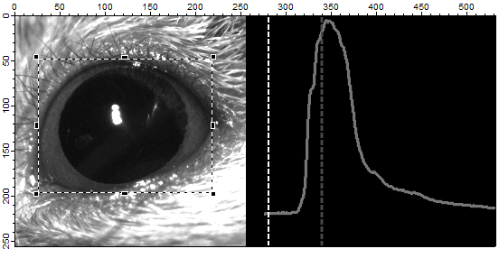
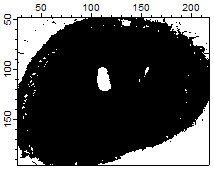
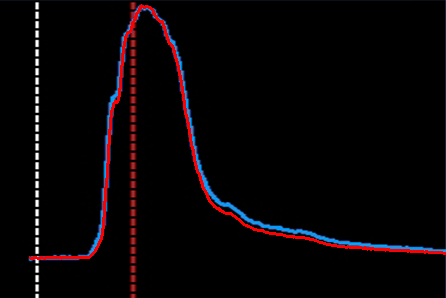

EyelidTracker
Test #2
This video was recorded after the mouse was trained.
Source
CS-Alone.avi (Conditioned Stimulus Alone, generously provided by Dr. Javier Medina
in the University of Pennsylvania.)
Methods
- The first method selects the pupil as the region of interest (ROI).
- The second method selects the whole eye as the ROI. This method produced simular
resulte as that from Dr. Javier Medina's lab.
Method #1
The pupil was selected as the ROI.
Original Image

Grayscale Image and ROI

Thresholding (threshold = 47)

Compare Results
- White dashed line: CS
- Dark red dashed line: Expected US
- Blue trace: Eyelid position quantified by Dr. Javier Medina's lab
- Red trace: Eyelid position quantified by EyelidTracker

Method #2
The whole eye was selected as the ROI.
Grayscale Image

Thresholding (threshold = 78)

Comparison
- White dashed line: CS
- Dark red dashed line: Expected US
- Blue trace: Eyelid position quantified by Dr. Javier Medina's lab
- Red trace: Eyelid position quantified by EyelidTracker
- This method generated the result similare to that from Dr. Javier Medina's lab.
